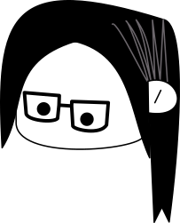
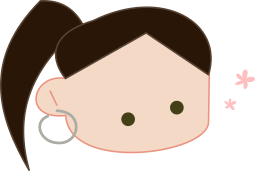

whoami
 Hello,
Hello,
I'm Noe Luaces, and among other things, I'm a software engineer by profession.
The purpose of this personal website is sharing my experience and my personal/parallel projects that I've been working on through my career.
In 2007, I finished my 3 year Bachelor Degree in Computer Science, but I always wanted to learn more of subjects that weren't included
in my degree; so I enrolled a course to adapt my old degree to 4 year Bachelor Degree while working full time (don't recommend doing both things
a the same time though).
I've also worked on initiatives to keep women developers in the industry, by offering them support that I know
is needed by experience.
I will say that I keep insisting on practicing some hobbies through all these years: like drawing, taking
pictures with plastic cameras with plastic lenses (aka Lomography) or just with my phone -overusing filters, of course-,
reading and accumulating comics (Japanese, French, Belgian, Korean or American indie comics), over-analysing indie movies and sometimes, criticising the mainstream ones.
Timeline Experience
Senior Software Engineer
September 2020 - Present
...
Senior Software Consultant Developer
October 2018 - August 2020
My main experience during this period was working on microservices that used Spring Boot written in Kotlin + Arrow,
following SOLID principles and TDD. Those practices were reflected delivering a robust, high quality product.
I've worked with feature toggles, that helped to have Continuous Deployment.
Regarding soft skills, I've gained experience through pair programming, giving/receiving feedback and mentoring other people.
I was also part of the Tech Council, encouraging people to use new technologies reflected in ThoughtWorks Tech Radar.
This experience gave me a broad vision of the different alternatives regarding technical tools.
Senior Software Engineer
February 2018 - September 2018
 First experience working remotely full time. I was working in a technical project that required customizations for the
Oracle API Gatekeeper following agile
methodologies.
First experience working remotely full time. I was working in a technical project that required customizations for the
Oracle API Gatekeeper following agile
methodologies.
Bachelor's Degree in Computer Science, Computer Software Engineering (UDC)
October 2017
 I've learned about Software Architecture models and techniques, and also I was exposed to functional programming.
I've learned about Software Architecture models and techniques, and also I was exposed to functional programming.
Senior Software Engineer & Technical Lead
August 2015 - October 2016
I became the responsible of the technical solutions applied to the project during the new iterations. The project the implementation of workflows with JBPM.
Senior Software Developer
May 2014 - August 2015
This was my first experience as a full stack developer specialized in backend. I was participating on a project with a heavy client - server architecture, that its main purpose was to show the financial positions of the different financial products of the customer company. The webservice was written in Java, Spring and Hibernate; and the client was written in SWT and Spring.
Software Developer
February 2011 - May 2014
I was building (along with my team) a web application in GWT, Spring and Hibernate that was in charge of the lifecycle of the billing process from the orders generated by external providers, for a specific customer in the retail industry.
I have also participated in the migration of a legacy web application into a different Websphere version.
Software Developer
May 2008 - February 2011
During this period I was working in a start-up specialized in customizing modules for Alfresco CMS and giving support to our clients while deepening my knowledge in Linux. I've also worked as a consultant for the Galician healthcare system.
I've worked on building Liferay portals coding in Javascript and integrating them in Alfresco CMS.
Junior Developer
November 2007 - May 2008
My first job was also my first opportunity working in consultancy. I was building and testing new batch processes for a client related to banking.
Bachelor's Degree in Informational Technology Engineering in Computer Systems (UDC)
October 2007
I really liked the idea of programming and building systems or applications as a way of living; and overall, to learn how to design maintainable and good code.